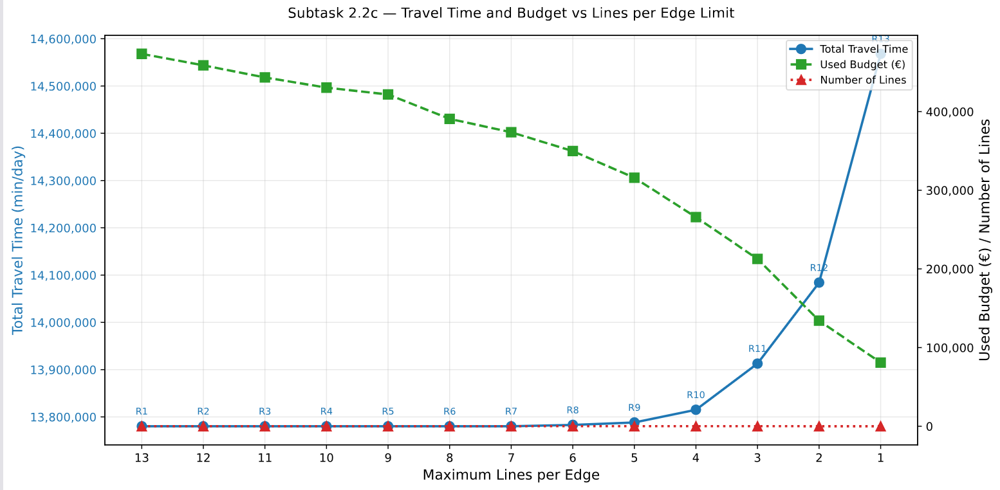

Campus Shuttle in Dresden
Network Design & Line Network Planning
A transport optimisation project combining infrastructure network design with passenger-focused line network planning.

Reference line network without a budget constraint. Grey links represent the base network while coloured connections represent implemented lines in both directions.
Project Overview
This project investigated the design and operation of a proposed campus shuttle network in Dresden.
The analysis was structured around two connected transport planning problems: determining which network links should form the infrastructure and determining which passenger lines should operate on the resulting network.
Problem & Objective
The first part of the project examined alternative infrastructure-network configurations. The analysis considered both construction cost and the opportunity cost associated with passenger movement.
The second part focused on line-network planning. The objective was to minimise total passenger travel time while explicitly considering transfers between lines.
Approach
-
Network-design scenarios
Three alternative node sets were evaluated: nodes 1–30, nodes 1–31 and nodes 1–32. -
Vehicle alternatives
Each network configuration was evaluated for small, medium and large bus types. -
Cost evaluation
Total cost was assessed as the combination of construction cost and opportunity cost. -
Line-network planning
The reference case considered all 60 potential lines and a transfer time of three minutes. -
Reference solution
The line network was first evaluated without a budget constraint to establish a benchmark for passenger travel time.
Network-Design Analysis
A total of nine network-design scenarios were evaluated. The comparison combines three possible network sizes with three bus types and shows how these decisions influence construction requirements, opportunity cost and total system cost.

Total-cost comparison for the nine network-design scenarios evaluated in the project.
Line-Network Planning
The unconstrained line-network scenario was used as a technical reference case. Because no budget constraint was imposed, all available lines could be selected to provide passengers with the maximum number of routing alternatives.
With no budget restriction, all 60 potential lines were implemented. This provides passengers with the maximum set of routing options and produces the lowest achievable total travel time within the analysed reference configuration.
The result therefore serves as a technical baseline for comparison rather than as a recommended real-world operating budget.
Methods Demonstrated
Key Takeaways
- Infrastructure design and service design should be considered together because network decisions influence both system cost and passenger routing.
- Comparing multiple network and vehicle configurations makes the trade-off between infrastructure extent and total system cost visible.
- An unconstrained line-network solution provides a useful technical benchmark for evaluating budget-constrained alternatives.